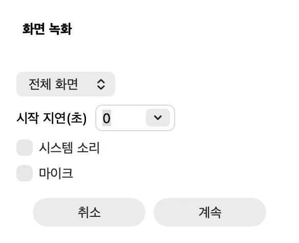
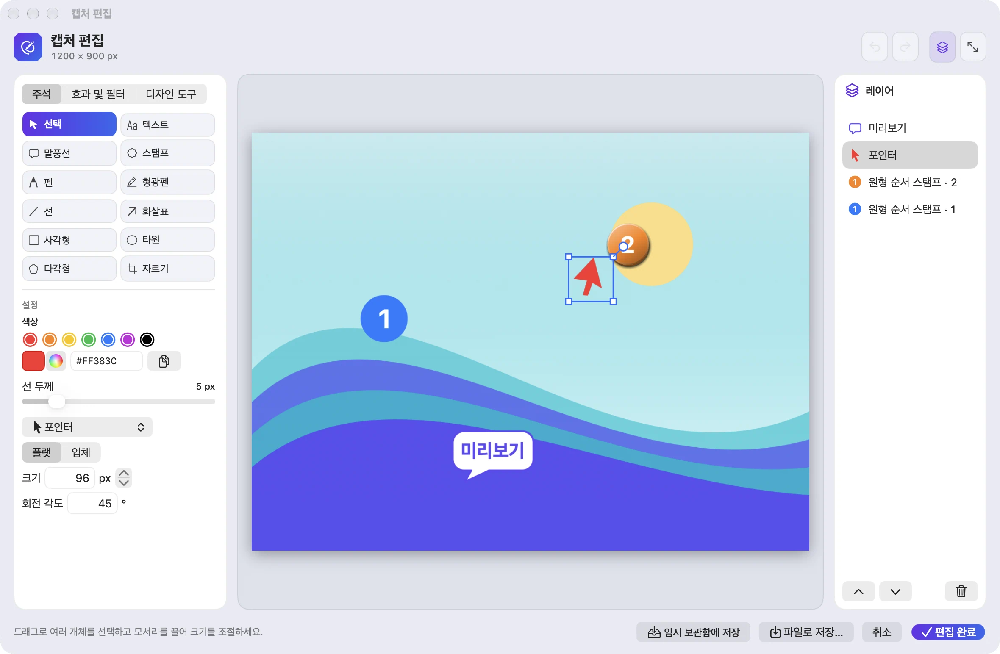
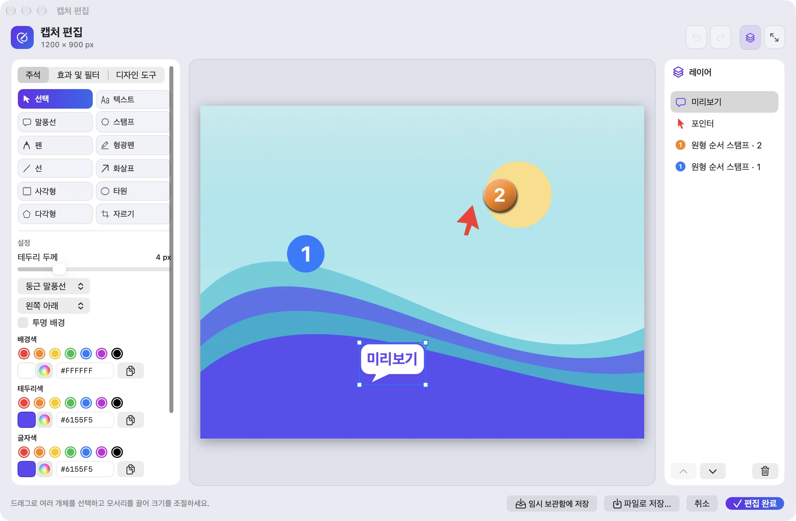
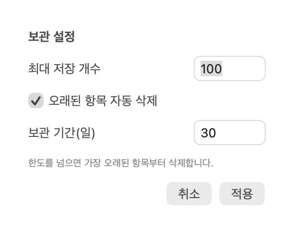
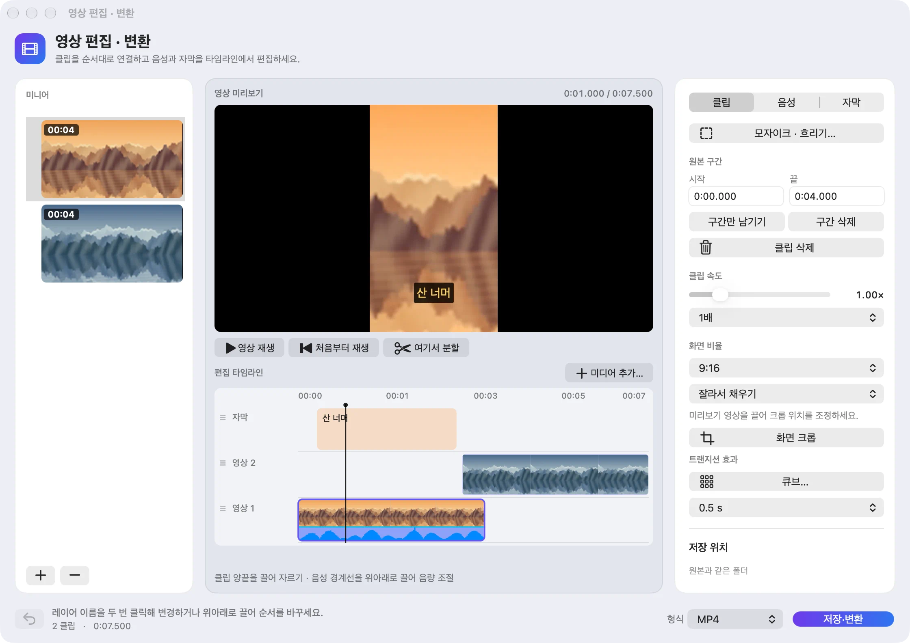
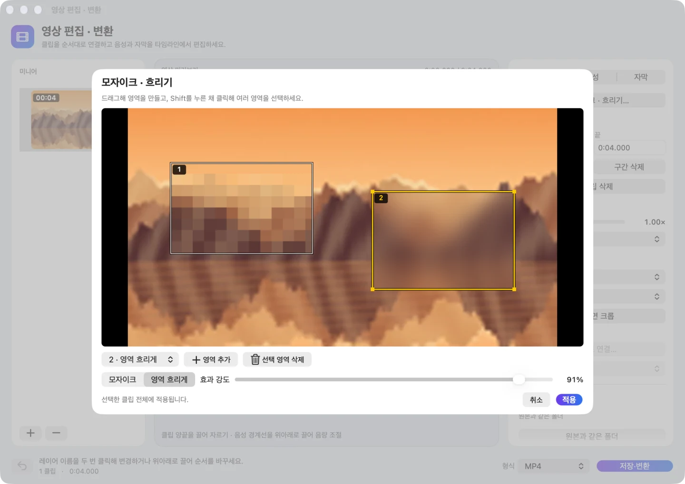
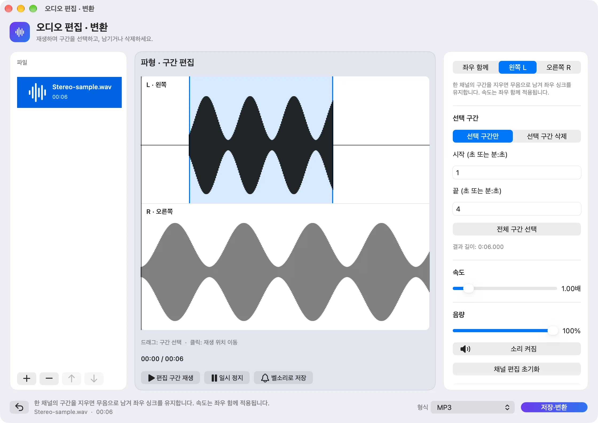
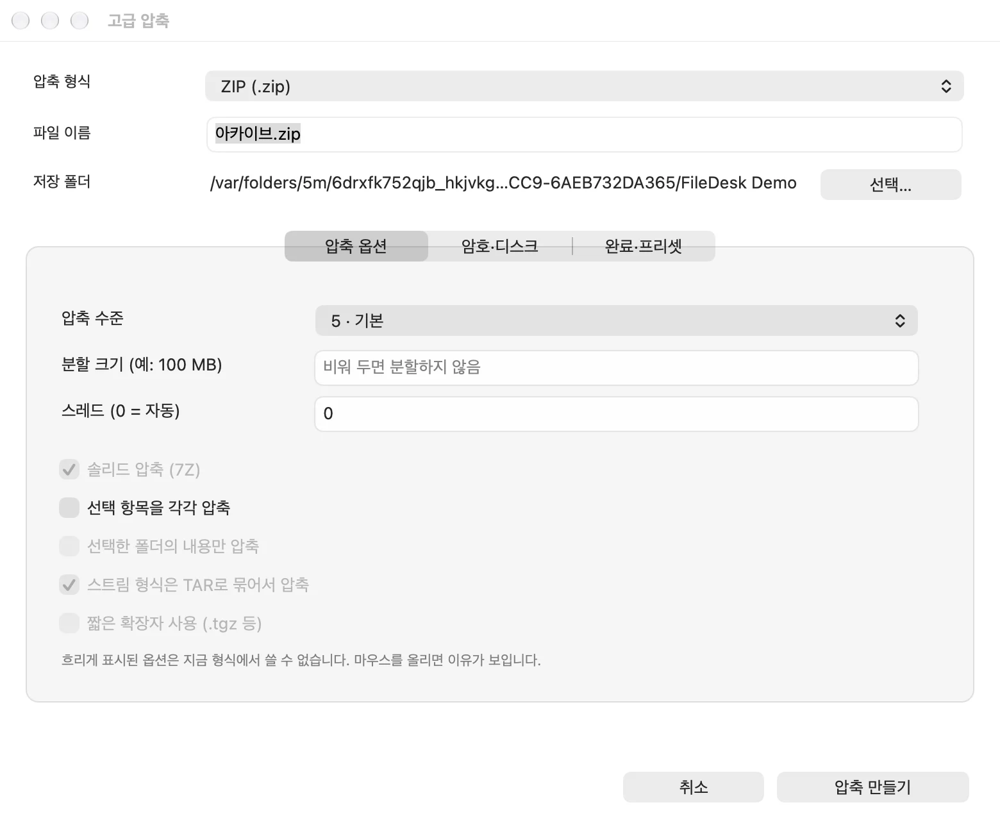
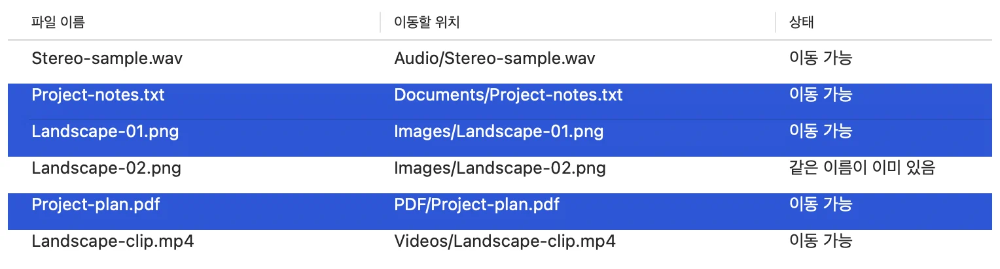

PRO
파일을 정리하던 창에서 화면을 캡처하고, 이미지·PDF·오디오·영상을 편집하고 변환하세요.
Pro 에 추가된 기능
FileDesk Pro에는 일반판의 모든 기능이 포함됩니다. 여기에 화면 녹화, 시간 제한 인터넷 공유, 사용자 도구 모음의 아이콘 변경 같은 Pro 전용 기능이 추가됩니다.
변환 도구는 선택한 파일의 종류와 개수에 맞춰 표시됩니다. 일부 문서의 PDF 출력에는 호환되는 문서 앱이 필요합니다. 압축 옵션은 형식별로 다릅니다.
화면 캡처와 문자 인식
도구 막대의 화면 캡처에서 전체 화면, 창 또는 영역을 선택하세요. ‘더 보기’에서 같은 영역을 다시 찍거나 3초 뒤에 찍을 수 있습니다. 긴 페이지는 스크롤 캡처 영역 안에서 위나 아래로 천천히 스크롤한 뒤 완료하세요. 미리보기에서 PNG 저장, 복사, 텍스트 추출을 선택할 수 있습니다. 이미지 파일이나 클립보드 이미지도 열 수 있습니다. 자동 스크롤에는 macOS 손쉬운 사용 권한이 필요합니다. 직접 스크롤할 수도 있습니다.

텍스트 추출로 읽을 부분을 드래그하고 결과 창에서 원문을 확인하거나 수정하세요. macOS 14.4 이상에서는 번역을 열 수 있습니다. 원문이나 번역문을 복사하거나, 임시 보관함에 자동 이름 또는 직접 정한 이름으로 저장하세요. 창 캡처에서는 직전에 사용한 앱과 현재 FileDesk 창을 따로 선택할 수 있습니다.

여러 언어가 섞인 문서에서는 결과 창에 표시되는 감지 언어를 확인한 뒤 인식된 글자를 수정할 수 있습니다.
화면 녹화
도구 막대에서 녹화를 열고 전체 화면·창·영역 중 하나를 고르세요. 시스템 소리와 마이크를 선택하고 시작 지연을 0~300초로 정할 수 있습니다. MP4 저장 위치를 지정하고 카운트다운이 끝나면 녹화가 시작됩니다. 녹화를 마치려면 중지를 누르세요. 단축키 설정에서 다른 앱을 사용하는 동안 실행할 캡처·녹화 명령도 지정할 수 있습니다.

macOS가 공유할 항목을 물으면 캡처하거나 녹화할 화면 또는 창을 선택하세요. 내 목소리도 담으려면 녹화 옵션에서 마이크를 켜고 macOS의 마이크 접근을 허용하세요.
주석·스탬프·모자이크
캡처 미리보기에서 편집을 열고 펜·화살표·도형·텍스트를 추가하거나 이미지를 자르세요. 왼쪽에서 평면·입체 스탬프와 글자 스타일을 고르고, 오른쪽 레이어 목록에서 주석의 위치·크기·순서를 조절하세요. 워터마크, 흑백·단색 톤, 테두리와 그림자 효과도 적용할 수 있습니다.
평면 또는 입체 스탬프를 고르세요. 클릭하면 지정한 크기로 놓이고, 드래그하면 원하는 크기로 배치됩니다.

선택 도구로 여러 개체를 둘러싼 뒤 함께 옮기거나 모서리로 크기를 바꾸세요. 레이어 순서를 앞뒤로 바꿀 수 있습니다. 말풍선은 모양·꼬리·배경을, 글자는 글꼴·크기·굵기·기울임을 정합니다. 효과 탭에서는 흐림 반경과 모자이크 크기, 단색 톤을 조절하세요.

화살표나 포인터 같은 방향 스탬프를 선택하고 회전 손잡이를 끌거나 각도를 입력하세요. 말풍선 윤곽은 꼬리까지 이어집니다. 필요 없는 주석은 우클릭해 개체 삭제를 선택하세요.

말풍선의 채우기·테두리·글자 색과 테두리 두께를 따로 정하세요. 투명 배경을 고르면 뒤의 이미지가 보입니다. 효과에서 흐림 반경이나 모자이크 블록 크기를 맞춘 다음 적용하세요. 편집 창의 ‘파일로 저장’으로 PNG를 바로 내보낼 수 있습니다.

도형이나 선을 그리기 전에 두께를 정하세요. 다각형은 각의 수를 고르고, 순서 스탬프는 다음 표시를 확인하거나 순서를 처음부터 시작할 수 있습니다. 영역 모자이크를 드래그한 뒤 같은 영역을 다시 클릭하면 블록 크기를 조절할 수 있습니다.

픽셀 측정과 QR 코드
디자인 도구에서 눈금자를 드래그해 픽셀 거리를 재거나 각도기로 세 점을 찍으세요. Shift는 각도기를 15°씩, 선을 45°씩 맞춥니다. 십자선은 클릭해 기준점을 고정하고 돋보기·십자선은 화살표 키로 1픽셀씩 이동합니다. QR 버튼으로 화면의 코드를 클릭하거나 영역·파일·클립보드·선택 이미지를 읽고 결과를 복사하거나 링크를 여세요. Shift를 누르고 도형을 그리면 정사각형·원·정다각형이 됩니다. 스탬프는 찍기 전에 반투명 미리보기로 위치를 맞출 수 있습니다.


클립보드와 임시 보관함
도구 막대에서 클립보드를 열고 파일·이미지·텍스트 항목을 고르세요. 스페이스바로 미리보고 위아래 화살표로 다른 항목을 확인할 수 있습니다. 다시 복사하거나 보관함에 저장하세요. 보관함에서도 선택 항목을 미리보거나 위쪽 파일 창에서 열 수 있습니다.

Pro를 실행한 상태에서 파일·이미지·텍스트를 복사하면 기록에 추가됩니다. 클립보드의 보관 설정에서 최대 항목 수(1~10,000개)와 자동 삭제 기간(1~3,650일)을 정하세요. 한도에 도달하면 오래된 항목부터 삭제됩니다.

기록을 한꺼번에 지우려면 ‘전체 비우기’를 선택하고 확인하세요.
영상 타임라인 편집
미디어 목록에서 영상·사진·음성을 타임라인으로 끌어오세요. 클립 양끝을 끌어 다듬거나 재생 위치에서 분할한 뒤, 선택 구간만 남기거나 삭제합니다. 클립은 0.1~5배속으로 재생할 수 있고, 레이어 이름을 두 번 클릭해 바꾸거나 위아래로 끌어 겹침 순서를 정할 수 있습니다. 전환 갤러리에서 효과와 길이를 고른 뒤 스페이스바로 결과를 확인하세요.

전환 갤러리에서 효과 33가지를 비교하거나 컷을 선택해 두 클립을 바로 이으세요. 화면 비율을 정한 뒤 전체 프레임을 맞추거나 화면을 채우도록 잘라낼 수 있습니다.

영상 아래의 파형 경계선을 끌어 음량을 바꾸고 클립 양끝을 끌어 길이를 조절하세요. 레이어 이름을 두 번 클릭해 바꾸고, 위아래로 끌어 겹침 순서를 정할 수 있습니다.
음성 탭에서 스피커 아이콘으로 음소거 상태를 확인하고 음량, 음높이, 페이드인·아웃을 조절하세요. 음성을 분리하면 시작 위치를 옮길 수 있습니다. 자막 탭에서는 표시 시간, 글꼴, 크기와 10가지 모양을 고릅니다. 편집 결과를 재생한 뒤 전체 타임라인 또는 선택 클립을 저장하세요.
자막 편집창에서 색상 견본을 누르거나 HEX 값을 입력해 글자색을 정하세요. 미리보기에서 색을 확인한 뒤 ‘적용’을 누르면 저장 영상에도 반영됩니다.

화면 비율과 ‘잘라서 채우기’를 선택한 뒤, 미리보기 영상을 끌어 프레임 안에 담을 장면을 정하세요. 타임라인에서는 영상과 아래쪽 파형이 함께 이동하고 잘립니다. ‘음성 트랙 분리’를 누르면 음성을 따로 편집할 수 있습니다.
클립에서 ‘모자이크 · 흐리기’를 열고 영상 위를 드래그하세요. 각 영역의 효과와 강도를 따로 지정하거나 Shift를 누른 채 여러 영역을 클릭해 한꺼번에 바꿀 수 있습니다. 영역 안을 끌면 이동하고, 한 영역의 모서리를 끌면 크기가 바뀝니다. ‘적용’을 누르면 클립 전체에 반영됩니다. 효과를 없애려면 해당 영역을 선택하고 ‘선택 영역 삭제’를 누른 뒤 적용하세요.

저장할 때 전체 타임라인, 선택한 클립 또는 영상·음성 파일 따로 저장을 고를 수 있습니다. 전환 효과는 길이도 조정할 수 있습니다.
타임라인 전체 또는 선택한 클립을 MP4, MOV, MKV, WebM으로 저장하세요. 소리만 저장할 때는 MP3, M4A, WAV를 선택할 수 있습니다. 소리가 있는 영상을 내보낼 때는 영상과 음성을 별도 파일로 저장할 수도 있습니다.
영상 · 저장 형식
- MP4
- MOV
- MKV
- WEBM
- MP3
- M4A
- WAV
영상 · 변환 도구
- GIF로 변환
- MP4로 변환
- MOV로 변환
- MKV로 변환
- WebM로 변환
- AVI로 변환
- MP3로 변환
- M4A로 변환
- WAV로 변환
- FLAC로 변환
- Opus로 변환
- AIFF로 변환
- 압축 (용량 줄이기)
- 자르기 (구간)
- 속도 바꾸기
- 소리 없애기
- 장면 캡처 (JPG)
- 음량 고르게
- HEVC(H.265)로 변환
- 아이폰 벨소리(M4R)
- 말소리 → 자막(받아쓰기)
- 모노로
- 메타데이터 지우기
작업 공간과 설정
시스템 도구 막대와 런처를 각각 창의 네 가장자리 중 원하는 곳에 배치하세요. 사이드바 섹션은 접거나 끌어서 순서를 바꿀 수 있습니다. 사이드바 하단에서 설정을 열면 Pro에서는 일반, 화면 모양, 도구 막대, 왼쪽 메뉴, 임시보관함, 전송, 라이선스를 한 창에서 관리합니다.

시스템 도구 막대나 런처의 손잡이 또는 빈 곳을 잡고 원하는 창 가장자리 쪽으로 끕니다. 커서 옆에서 대상 위치를 확인한 뒤 놓으세요. 가운데 십자 근처에 놓으면 막대가 원래 자리에 남습니다.
일반 설정에서 앱 언어와 로그인 시 자동 시작을 선택하세요. 파일 이름을 컬러로 표시한 뒤 파일을 우클릭하면 같은 확장자의 파일 이름에 공통으로 적용할 색을 정할 수 있습니다.


Pro 전용 편집 도구와 사용자 아이콘은 라이선스를 활성화한 뒤 사용할 수 있습니다. 사이드바의 설정에서 라이선스 상태를 확인하세요. 같은 Mac에서 앱을 업데이트하면 기존 활성화 상태를 이어서 사용합니다.
작업창·탐색 도구
- 터미널 앱 선택
- 도구 막대의 위치, 표시 방식과 버튼
- 런처
- 섹션 순서, 접기와 표시할 항목
- 일괄 이름 변경
- 폴더 선택…
이미지 편집·변환
이미지·PDF 편집기는 밝은 모드와 어두운 모드를 지원합니다. 파일 목록에서 편집할 항목을 선택하고 가운데 미리보기를 보며 오른쪽에서 도구를 고르세요.
미리보기에서 사진을 자르거나 회전하고, 크기를 바꾸거나 좌우·상하로 뒤집으세요. 배경이나 메타데이터를 제거하고 JPG, PNG, HEIC, WebP, AVIF 등으로 저장할 수 있습니다. 여러 이미지를 한 PDF로 묶거나 이미지 속 QR 코드도 읽을 수 있습니다.
이미지를 선택해 이미지 편집·변환을 열고 자르기·회전·크기를 조절합니다. 형식 버튼을 누른 뒤 저장·변환을 실행하세요. 흑백·반전은 다시 누르면 해제됩니다. 배경 제거는 피사체가 뚜렷한 사진에 적합하며 투명 결과는 PNG로 저장합니다. 인식 실패 시 다른 편집과 원본 미리보기를 유지합니다.

이미지 편집
- 선택 영역 자르기
- 90° 회전
- 크기 적용
- 가로세로 비율 유지
- 저장 품질
- 흑백
- 배경 제거
- 좌우 반전
- 상하 반전
- 메타데이터 제거
- 용량 줄이기
- 글자 읽기
- QR·바코드
- 읽은 내용 복사
- 검색 가능한 PDF로 저장
- PDF 한 파일로 저장
- 텍스트·모양 편집 열기
- 콜라주 미리보기·편집
이미지 · 저장 형식
- JPG
- PNG
- HEIC
- WEBP
- AVIF
- TIFF
- GIF
- BMP
- TXT
PDF 페이지·주석 편집
PDF 페이지를 재정렬·회전·삭제하거나 여러 문서를 합치고 나눌 수 있습니다. 글자, 이미지, 도형, 메모, 서명을 주석으로 추가하고 추가한 항목을 이동하거나 크기를 바꾸세요. 영역 가리기, 워터마크, 쪽 번호와 암호 설정도 지원합니다.
PDF 편집창에서 페이지를 선택해 순서·회전·삭제를 조정하고 필요한 주석을 추가합니다. 글·이미지·서명 등을 선택해 이동·크기 변경·삭제한 뒤 새 파일로 저장합니다.

PDF 주석과 페이지 편집
- 텍스트 선택·보기
- 객체 선택·이동
- 선택 객체 크기 변경
- 텍스트 넣기
- 그림·서명 이미지
- 펜·손그림 서명
- 사각형
- 타원
- 선
- 화살표
- 형광펜
- 메모
- 완전 가리기
- 선택 페이지 회전
- 선택 페이지 삭제
- 선택 페이지 복제
- 선택 페이지 뒤에 빈 쪽
- 확대
- 축소
- 페이지에 맞추기
PDF 변환·인식·추가 도구
편집창에서 문서·이미지 변환, OCR, PDF/A, 웹 최적화, 메타데이터 제거, 비교·겹치기·복구를 바로 선택합니다. 스캔·카메라·화면 가져오기, 문서 묶기와 송장 자료 도구도 제공합니다.
PDF 편집창에 표시된 변환·추가 도구에서 원하는 출력 형식이나 OCR 등을 바로 고릅니다. 페이지 범위·언어·암호 등 해당 옵션을 확인하고 실행하세요. 지원 형식과 변환 한계는 아래 이용 조건을 확인하세요.
표지를 붙여 제출 서류를 묶고, 송장 PDF나 XRechnung XML을 만드세요. 스캔·카메라·화면 캡처에서 페이지를 가져오거나, 여러 쪽을 한 장에 배치하고 출력 설정을 프로필로 저장할 수 있습니다. 보관용 PDF/A-1b·2b·3b는 페이지를 이미지로 고정합니다.
PDF/A와 영역 가리기는 페이지를 이미지로 고정합니다. EPUB은 텍스트 기반, SVG는 이미지 기반이며 변환 시 원본 서식 보존에는 한계가 있습니다. 암호 해제에는 필요한 암호가 있어야 합니다. 송장 XML은 XRechnung 형식이며 한국 전자세금계산서 발행 기능은 아닙니다.

PDF 편집 · 변환
- 압축 (용량 줄이기)
- 회전 (시계 방향)
- 흑백으로
- 메타데이터 지우기
- PDF 하나로 합치기
- 나누기 (쪽마다)
- 쪽 뽑기
- 쪽 지우기
- 쪽 순서 바꾸기
- 쪽 순서 뒤집기
- 워터마크 넣기
- 쪽 번호 넣기
- 암호 걸기
- 암호 풀기
- 글자 인식 (OCR)
- 글 → 음성 파일(M4A)
- 번역
- 평탄화 (주석·양식 고정)
- 주석 지우기
- 모아 찍기 (한 장에 여러 쪽)
- A4 크기로 맞추기
- 여백 자르기
- 빈 쪽 지우기
- 긴 이미지로 (JPG 한 장)
- 그림만 뽑기
- 쪽 끼워 넣기
- 쪽 바꾸기 (다른 파일로)
- 빈 쪽 넣기
- 골라서 회전 (일부 쪽)
- 용지 크기 바꾸기
- 머리말·꼬리말
- 그림 워터마크
- 도장 찍기 (날짜)
- 서명 넣기 (그림)
- 가리기 (개인정보·낱말)
- 인쇄·복사 막기
- 암호 바꾸기
- 문서 정보 보기
- 문서 정보 고치기 (제목·작성자)
- 책갈피 만들기·지우기
- 직접 편집 · 글·그림·도형
- 주석 · 형광펜·메모·그리기
- 손그림·사진 서명
- 영역 가리기 · 내용 완전 제거
- PDF 겹쳐 넣기
- PDF 비교 · 글·화면
- 웹 최적화 · 빠른 첫 페이지
- 문서 메타데이터 제거
- PDF/A-1·2·3 보관용 저장
- 파일을 PDF로 가져오기
- 지원서·제출 문서 묶기
- 송장 작성 · PDF
- 전자 송장 · XRechnung XML
- 화면 캡처 가져오기
- 카메라·사진 가져오기
- 스캐너에서 가져오기
- 인쇄 · PDF로 저장
- 출력 규칙 저장·불러오기
- 팩스용 PDF 저장
- PDF 구조 복구
- PDF 이미지화
- PDF 열기 방식 설정
PDF · 저장 형식
- PNG
- JPG
- DOCX
- DOC
- HWPX
- TXT
- RTF
- HTML
- ODT
- XLSX
- PPTX
- EPUB
- SVG
- PDF/A-1
- PDF/A-2
- PDF/A-3
오디오·스테레오·벨소리
파형에서 구간을 남기거나 삭제하고 속도·음량·음소거를 조절합니다. 스테레오 L/R 파형을 따로 편집하고 미리듣습니다. MP3·M4A·WAV·FLAC·Opus·AIFF 또는 30초 이내 M4R 벨소리로 저장합니다. 오디오 한 채널의 구간 삭제는 싱크 유지를 위해 무음으로 남습니다.
오디오 편집창에서 파형 구간을 선택하고 전체·왼쪽·오른쪽 채널을 고릅니다. 스테레오 L/R 파형을 따로 확인하며 편집 후 미리듣고 저장합니다. 벨소리는 30초 이내 구간을 M4R로 내보내며 기기로 전송·등록하는 과정은 별도입니다.

오디오·영상 편집
- 선택 구간만
- 선택 구간 삭제
- 전체 구간 선택
- 시작 시간
- 끝 시간
- 속도
- 음량
- 음소거
- 편집할 오디오 채널
- 좌우 함께
- 왼쪽 L
- 오른쪽 R
- 채널 편집 초기화
- 편집 구간 재생
벨소리로 저장
- 벨소리 구간 선택 · 최대 30초
- 벨소리로 저장
오디오 · 저장 형식
- MP3
- M4A
- M4R
- WAV
- FLAC
- OPUS
- AIFF
오디오 · 변환 도구
- MP3로 변환
- M4A로 변환
- WAV로 변환
- FLAC로 변환
- Opus로 변환
- AIFF로 변환
- 압축 (용량 줄이기)
- 자르기 (구간)
- 속도 바꾸기
- 음량 고르게
- 아이폰 벨소리(M4R)
- 말소리 → 자막(받아쓰기)
- 모노로
- 메타데이터 지우기
문서·자막·일괄 작업
지원 문서의 PDF·Word·HWPX·TXT·RTF·HTML·ODT 변환과 PDF의 XLSX·PPTX 내보내기. SRT·VTT·SMI 자막 변환, 이미지·PDF OCR, 여러 파일 일괄 실행과 저장 폴더 선택을 지원합니다.
변환 도구에서 지원하는 문서·자막 형식과 대상 파일을 선택합니다. 여러 파일을 일괄 처리할 때는 출력 형식과 저장 폴더를 확인하고 진행 결과에서 생성 파일을 엽니다.

문서 · 변환 도구
- PDF로 변환
- Word(DOCX)로 변환
- Word 97(DOC)로 변환
- 한글(HWPX)로 변환
- 텍스트(TXT)로 변환
- RTF로 변환
- HTML로 변환
- ODT로 변환
- 글 → 음성 파일(M4A)
- 번역
자막 · 변환 도구
- 텍스트(TXT)로 변환
- SRT 자막로 변환
- VTT 자막로 변환
- SMI 자막로 변환
- 글 → 음성 파일(M4A)
- 번역
고급 압축 만들기·해제
7Z·ZIP·TAR 계열, DMG·ISO·Zstandard 등 만들기와 RAR·분할 파일·WPRESS 등의 해제. 형식별 암호·파일명 암호화·분할·압축 수준·개별 압축·검증·프리셋을 지원하며 별도 앱 설치가 필요 없습니다.
압축 만들기에서 출력 확장자를 먼저 고르면 그 형식에 맞는 암호·분할·압축 수준 등이 표시됩니다. 고급 압축 엔진이 포함되어 별도 앱 설치는 필요 없으며, 해제할 때 암호·분할 파일과 저장 위치를 확인합니다.
지원 형식에 따라 압축 수준, 스레드 수, 분할 크기, 암호, 파일 이름 암호화를 고르세요. 항목별 압축, 폴더 내용만 묶기, Mac 메타데이터 처리, 결과 검증을 설정할 수 있습니다. 암호를 제외한 설정은 프리셋으로 저장됩니다.
압축 옵션은 형식에 따라 다릅니다. RAR·WPRESS는 해제만 지원합니다. 독립적으로 사용 가능한 외부 엔진을 각 라이선스에 따라 포함합니다.

압축 파일 만들기
- ZIP
- 7Z
- TAR
- GZIP
- BZIP2
- XZ
- LZIP
- DMG
- ISO
- Brotli
- Zstandard
- LRZIP
- AAR
- WIM
고급 압축 해제
- .zip
- .zipx
- .7z
- .rar
- .tar
- .gz
- .tgz
- .bz2
- .tbz
- .tbz2
- .xz
- .txz
- .lz
- .tlz
- .lzma
- .lz4
- .br
- .tbr
- .zst
- .tzst
- .lrz
- .tlrz
- .dmg
- .iso
- .exe
- .cab
- .wim
- .msi
- .pax
- .jar
- .war
- .ipa
- .xip
- .apk
- .appx
- .xpi
- .aar
- .cpio
- .cpgz
- .cpt
- .spk
- .is3
- .xar
- .wpress
- .001
압축·해제 옵션
- 분할 크기 (예: 100 MB)
- 스레드 (0 = 자동)
- 솔리드 압축 (7Z)
- 선택 항목을 각각 압축
- 선택한 폴더의 내용만 압축
- 스트림 형식은 TAR로 묶어서 압축
- 짧은 확장자 사용 (.tgz 등)
- 암호
- ZIP 암호화: AES-256 (해제하면 ZipCrypto)
- 파일 이름도 암호화 (7Z)
- Windows 자동 풀림 파일 (.exe, 7Z)
- 디스크 이름 (DMG·ISO)
- Mac 메타데이터 제외 (.DS_Store·._ 파일)
- 압축 후 원본과 내용 검증
- 성공·검증 후 원본을 휴지통으로 이동
- 완료 후 FileDesk 창에서 결과 표시
- 압축 수준
- 현재 설정 저장…
- 선택한 설정 삭제
- 기본값으로
- 암호 (필요한 경우)
파일 이름 인코딩
- 자동 감지
- UTF-8
- CP949
- Shift_JIS
- GB18030
- Big5
- Windows-1252
해제 위치
- 항상 새 폴더
- 항목이 여러 개면 새 폴더
- 선택한 폴더에 바로 해제
- Mac 메타데이터 제외
- 결과 폴더에 압축 파일 수정일 적용
- 해제가 완료된 원본을 휴지통으로 이동
시간 제한 인터넷 공유
파일·폴더를 1분~7일 동안 인터넷 링크로 공유하고 즉시 중지할 수 있습니다. 공유 목록, 접속 시각·IP·브라우저·전송 상태와 CSV 기록을 제공합니다. 받는 사람은 앱 설치 없이 브라우저로 받습니다. 보내는 Mac에는 Tailscale 로그인과 최초 Funnel 승인이 필요합니다.
파일·폴더를 여러 개 선택해 시간 제한 인터넷 공유를 엽니다. 파일·폴더 추가 또는 드래그로 목록을 늘리고 필요 없는 항목은 목록에서 제거합니다. 공유 시간을 정해 시작한 후 외부 확인이 끝난 링크를 전달하세요. 여러 파일·폴더는 ZIP 사본으로 공유하고 접속·다운로드 기록 탭에서 기록을 확인합니다.
공유하는 Mac에 Tailscale 설치·로그인과 최초 Funnel 승인이 필요합니다. Mac을 켜고 FileDesk·Tailscale과 인터넷 연결을 유지해야 합니다. 접속 기록은 실명 확인이 아니며, 만료되거나 중지되어도 이미 받은 사본은 회수되지 않습니다.

시간 제한 인터넷 공유
- 파일·폴더 추가…
- 선택 항목 제거
- 공유 시간
- 공유 시작
- 즉시 중지
- 링크 복사
- 브라우저에서 열기
- 접속·다운로드 기록
- 기록 CSV 저장…
- 기록 지우기
- 연결 확인
원하는 터미널 앱 선택
설치된 iTerm2·Ghostty·Warp 등이나 직접 지정한 터미널 앱으로 폴더와 SSH 작업을 엽니다. 일반판은 macOS 기본 Terminal만 사용하며, 다른 앱 선택은 Pro 활성화 후 제공됩니다.
Pro 활성화 후 설정의 터미널 항목에서 설치된 앱을 고르거나 앱을 직접 지정합니다. 현재 폴더에서 터미널 열기나 SSH 작업을 실행해 선택한 앱으로 연결합니다.

사진 콜라주
사진을 최대 20장까지 넣으세요. 2장 이상이면 격자 36종을 고를 수 있고, 모자이크 24종과 앨범 24종도 제공합니다. 사진마다 액자 50종과 마스크 50종을 조합하고 글자를 더할 수 있습니다.
선택 영역 위의 둥근 조절점을 끌어 사진 칸, 액자, 마스크 또는 텍스트를 돌립니다. Shift를 누른 채 끌면 15° 단위로 회전합니다.
사진 칸은 사각형·원형·하트·별 등 12가지 모양 중에서 고르세요. 사진 칸을 클릭하고 네 모서리 손잡이를 드래그해 크기를 바꿉니다. Shift 드래그는 현재 비율을 유지합니다. 모양 탭에서 가로·세로 픽셀을 입력하고 비율 유지 또는 크기 초기화를 선택할 수도 있습니다. 칸 이동은 프레임 자체를, 구도 이동은 칸 안의 사진을 옮깁니다. 왼쪽 목록은 ⌘ 클릭으로 다중 선택, ⇧ 클릭으로 범위 선택, ⌘A로 전체 선택합니다. 선택한 사진을 함께 제거·순서 변경·모양 변경·자동 맞춤·크기 조절하며 실행 취소로 복원합니다. 사진을 교환해도 칸 모양과 크기는 유지됩니다. 글자 탭에서는 Mac 설치 글꼴·크기·색·정렬·회전·테두리·그림자를 조절하고 최대 20개 글상자(각 2,000자)를 넣습니다. 간격·여백·배경을 조절해 PNG/JPG로 저장하며 투명 영역은 PNG를 사용합니다. 원본은 변경하지 않습니다.


콜라주 편집
- 격자 배치
믹스 24
- 소프트 갤러리
- 러브레터
- 별빛
- 사선 모자이크
- 물결 분할
- 꽃잎 바람개비
- 센터 포커스
- 작은 보석
- 꽃 피는 날
- 아치 회랑
- 추억 엽서
- 컬러 리듬
- 강의 흐름
- 접이 부채
- 격자 정원
- 퍼즐 이음
- 지그재그
- 잔물결
- 잎맥
- 프리즘
- 계단식 정원
- 지평선
- 돛의 곡선
- 장미창
포토 24
- 즉석사진 갤러리
- 테이프 다이어리
- 미드나이트 앨범
- 필름 콘택트 시트
- 차콜 집게
- 황동 바인더
- 로즈골드 클립
- 실버 클립
- 체리 압정
- 호박빛 압정
- 민트 압핀
- 코르크 게시판
- 코랄 테이프
- 파란 줄무늬 테이프
- 꽃무늬 테이프
- 양쪽 테이프
- 라벤더 모눈
- 고사리 노트
- 활판 엽서
- 긴 메모 여백
- 빈티지 사진 모서리
- 인디고 리넨
- 시네마 필름
- 기념일 스크랩
- 선택한 사진으로 새 앨범
- 사진 비율에 맞는 추천 배치
- 출력 크기 (픽셀)
- 사진 구도
- 칸 배치
- 사진 맞바꾸기
- 사진 확대·축소
- 칸 채우기
- 전체 보이기
- 선택 사진 자동 맞춤
- 모든 사진 자동 배치·맞춤
- 사진 칸
액자
- 리넨
- 월넛
- 황동
- 에나멜
- 이중 매트
- 가죽 바느질
- 구슬 장식
- 모자이크
- 필름 테두리
- 레이스
마스크
- 하트
- 별
- 꽃잎
- 물결 인장
- 다각형
- 아치
- 조약돌
- 찢은 종이
- 붓자국
- 부드러운 가장자리
- 가로·세로 비율 유지
- 사진 칸 가로
- 사진 칸 세로
- 회전 각도
- 위쪽 둥근 조절점을 드래그해 회전 · ⇧ 15° 단위
- 회전 초기화
- 사진 레이어 선택…
- 맨 앞으로 가져오기
- 한 단계 앞으로
- 한 단계 뒤로
- 맨 뒤로 보내기
스타일 프리셋
사진 칸 모양
- 사각형
- 원형
- 타원
- 하트
- 별
- 육각형
- 오각형
- 마름모
- 삼각형
- 꽃
- 아치
- 말풍선
- 전체 사진
- 선택 사진
스타일 선택…
- 깔끔한 격자
- 둥근 카드
- 따뜻한 종이
- 다크 프레임
- 파스텔
- 여백 없이
- 칸 간격
- 바깥 여백
- 모서리 둥글기
- 테두리 두께
- 배경색 · 테두리색
- 투명 배경 (PNG)
텍스트·모양 넣기
- 텍스트 추가
- 복제
- 삭제
- 앞으로
- 뒤로
- 글꼴
- 글꼴 스타일
- 글자 크기 (픽셀)
- 글자색
- 글상자 너비
- 회전
- 글자 테두리
- 글자 테두리색
- 불투명도
- 그림자
- 왼쪽
- 가운데
- 오른쪽
- Mac 이모티콘…
- 아이콘·스티커 붙여넣기 · ⌘V
- 선택 스티커 삭제
콜라주 편집 · 저장 형식
- PNG
- JPG
영역별 테마와 나만의 팔레트
추천 테마 8개에서 시작하거나 이미지에서 색을 추출하세요. 라이트·다크 모드별로 창, 사이드바, 도구 막대 두 개, 파일 창 여섯 개, 보관함, 선택 영역의 색과 투명도를 정할 수 있습니다. 자주 쓰는 색과 팔레트의 이름을 바꾸고, .fdtheme 파일로 저장하거나 다시 불러오세요.
설정의 화면 모양에서 이미지 팔레트를 열고 이미지를 고릅니다. 어울리는 색 추출을 누르면 라이트·다크 배색을 비교할 수 있습니다. 원하는 결과를 적용하거나 테마 파일로 저장하세요.

팔레트 관리
- 라이트 모드
- 다크 모드
- 설정할 모드
- 테마 종류
- 기본 색상 테마
- 사용자 색상 테마
- 추천 테마
- 영역 색
- 파일 창 색
- 테마 이름
- 이미지 팔레트…
- 이미지 선택…
- 어울리는 색 추출
- 테마 파일 저장…
- 사용자 지정 팔레트
- 팔레트 이름 변경…
- 팔레트 삭제…
- 색상 이름 변경…
- 색상 삭제…
- 테마 가져오기…
- 파일로 내보내기…
폴더 하나로 시작하는 일괄 이름 변경
폴더를 고르면 바로 아래의 파일만 목록에 담깁니다. 접두어·접미어, 찾기와 바꾸기, 일련번호, 날짜, 대소문자 규칙을 조합하고 적용 전에 새 이름을 확인하세요. 확장자는 유지되며 규칙을 저장해 다시 쓸 수 있습니다.
파일 메뉴에서 ‘이름 변경’을 선택하세요. 파일 하나를 선택하면 그 자리에서 이름을 입력할 수 있습니다. 두 개 이상이면 일괄 이름 변경 창이 열립니다. Pro 라이선스를 활성화하면 ‘폴더 선택…’으로 폴더 바로 안의 파일을 불러와 같은 규칙을 적용할 수 있습니다.
음성, 받아쓰기와 번역
문서·PDF·자막을 선택한 음성과 속도로 읽어 M4A로 저장하세요. macOS 26 이상에서는 오디오·영상의 말을 SRT·VTT·TXT로 받아쓰고, 설치된 언어 모델로 문서와 자막을 번역할 수 있습니다.
변환 도구 열기와 결과 저장
파일을 더블클릭하면 macOS 기본 앱으로 열립니다. 편집할 때는 파일이나 보관함에서 변환 도구를 여세요. 원본 옆이나 선택한 폴더에 새 파일을 저장하고 FileDesk 패널에서 확인할 수 있습니다. 변환 목록에서는 결과를 보관함에도 추가할 수 있습니다.
사용자 도구 모음
앱·폴더·파일·웹 주소를 도구 모음에 등록하면 한 번의 클릭으로 열 수 있습니다. Pro에서는 원하는 이미지를 복사한 뒤 버튼을 우클릭해 ‘아이콘 변경…’을 열고, ⌘V로 붙여넣어 적용하세요. 이모지나 이미지 파일을 선택하거나 기본 아이콘으로 되돌릴 수도 있습니다.

다운로드 폴더 정리
도구 메뉴에서 다운로드 정리를 열면 파일마다 이동할 폴더가 표시됩니다. ⌘를 누른 채 클릭해 선택을 조정한 뒤 ‘선택한 파일 정리’를 누르세요. 목적지에 같은 이름이 있는 파일은 제외됩니다.
다운로드 중인 파일과 숨김 파일, 기존 폴더는 건너뜁니다. 정리 후 ⌘Z를 누르면 이번에 옮긴 파일을 한꺼번에 원래 위치로 돌려놓습니다.


캡처에 확대 렌즈와 라벨 넣기
디자인 도구에서 원형 또는 사각 확대를 고르고 캡처의 일부를 드래그하세요. 확대된 부분은 별도 레이어라 옮길 수 있습니다. 배율은 1.5배부터 4배까지, 렌즈 모양은 평면·볼록·오목 중에서 고르세요.
강조 도형은 테두리와 채우기 색을 따로 정할 수 있습니다. 테이프는 색과 무늬, 불투명도를 조절하세요. 도형이나 테이프를 더블클릭해 글을 쓰고 Return으로 확정하세요. Option-Return은 줄바꿈, Esc는 입력 취소입니다.

파일 비교와 폴더 병합
복사·이동 중 이름이 겹치면 양쪽 수정 시각을 확인하세요. 더 최신인 원본만 대치하거나, 같은 이름의 로컬 폴더 두 개를 병합할 수 있습니다. 남은 파일 충돌과 폴더 충돌에는 각각 같은 선택을 적용할 수 있습니다.
파일을 선택하고 해시 계산·비교를 여세요. SHA-256 등 일곱 가지 방식으로 여러 파일을 비교하거나, 전달받은 체크섬을 붙여 넣어 일치하는 파일을 확인할 수 있습니다.
폴더 동기화에서는 빈 폴더를 건너뛰고, 체크섬 없이 비교할 때 서버와의 시차나 몇 초의 수정 시각 차이를 허용할 수 있습니다. 저장한 동기화 규칙은 명령 팔레트에서 이름으로 찾아 여세요.

사진·음악 정보로 이름 바꾸기
일괄 이름 변경에서 메타데이터 삽입을 선택하세요. 예를 들어 {track}과 {title}을 조합하고, 태그가 비어 있을 때 쓸 문구를 정할 수 있습니다. 미리보기에서 이름을 확인한 뒤 적용하세요.
확장자를 바꾸거나 지우고, 각 단어의 첫 글자를 대문자로 바꿀 수 있습니다. 중복 이름에 번호를 붙이는 옵션도 규칙과 함께 저장됩니다. 다음에는 선택한 파일을 우클릭해 저장한 규칙을 적용하세요.
폴더 권한과 서버 연결
권한 편집에서 소유자·그룹·기타 사용자의 읽기·쓰기·실행 권한을 체크하거나 755 같은 8진수 값을 입력하세요. 하위 항목에 함께 적용할 때 기존에 실행 권한이 없던 일반 문서는 실행 파일이 되지 않습니다.
기본 폴더 뷰어를 켜면 다른 앱의 ‘Finder에서 보기’ 요청을 FileDesk Pro에서 열 수 있습니다. 서버 연결 창에서는 SMB 같은 공유 폴더의 시작 시 재연결을 설정하거나 macOS 화면 공유(VNC)를 열 수 있습니다.
암호가 걸린 압축 파일을 자주 연다면 암호를 이 Mac의 키체인에 저장하세요. 압축을 풀 때 저장한 암호를 차례로 시도하도록 선택할 수 있습니다.
파일 창 안에서 터미널 열기
설정의 일반 탭에서 터미널 앱을 ‘FileDesk 창 안에서 열기’로 지정하세요. 폴더에서 터미널을 열면 그 위치에서 셸이 시작됩니다. SSH 연결 창에서 터미널을 열면 같은 패널에 원격 세션이 열립니다.